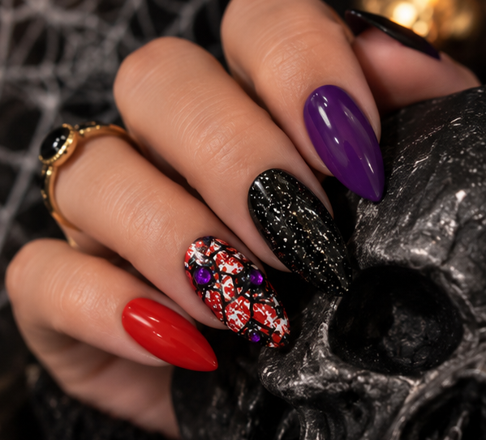

Find your fit
Lay your set out and match a nail to each finger before anything sticks.
- Match each nail edge to edge across your natural nail
- Between two sizes? Pick the smaller one
- Line them up in order so pressing goes fast

THE NAIL’D IT! RITUALYour manicure, simplified
Salon appointments mean chemical fumes, sticky discomfort, and an hour-plus in the chair — just to chip a week later. An instant mani gets you the same fresh-set look in minutes, with way less commitment. Choose the best fit, follow the adhesive instructions, and let the set do the rest.
Read the full ritualThree steps, zero chair time
Every set comes with 30 nails in 12 sizes, so there's a fit for every finger. Here's how to get a salon-fresh look at home.
Lay your set out and match a nail to each finger before anything sticks.
A clean, dry nail is what makes a set hold.
That's it. Your next favorite detail is on.